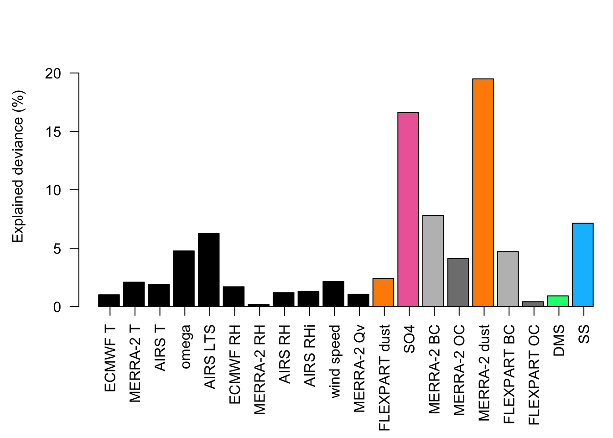

library(data.table)
library(scales)
library(devtools)Loading required package: usethislibrary(mgcv)Loading required package: nlmeThis is mgcv 1.9-0. For overview type 'help("mgcv-package")'.This figure shows, over Arctic sea ice, (a) The likelihood of clouds at different altitudes being classified by CloudSat as either liquid, mixed, or ice phase, (b) the estimated dust-driven increases in cloud glaciation in different meteorological conditions, and (c) the meteorological and aerosol parameters that best predict how glaciation changes within meteorological bins, based on deviance explained in a generalized additive model.
For Figure 1 first load the following libraries:
library(data.table)
library(scales)
library(devtools)Loading required package: usethislibrary(mgcv)Loading required package: nlmeThis is mgcv 1.9-0. For overview type 'help("mgcv-package")'.For Figure 1a we loaded the following data sets, which represent the fraction of liquid, mixed phase, and ice clouds in the study region/period:
fC<-read.csv("../../data/derived_data/fC.csv")We plotted the fractions at average altitudes of 1-8 km, and found the maximum values for the x-axis of Figure 1a:
alt<-fC$alt
xmax<-max(fC$fCliq,fC$fCmpc,fC$fCice)Then we looked at the data for Figure 1 a:
plot(fC$fCliq,alt,ty="l",col="#d7191c",xlim=c(0,100), lwd=5,yaxs="i",las=1,xaxs="i",cex.axis=1.4,cex.lab=1.4, ylab="Altitude (km)", xlab="Cloud phase frequency (%)")
points(fC$fCmpc,alt,ty="l",col="#fdae61", lwd=5)
points(fC$fCice,alt,ty="l",col="#2c7bb6", lwd=5)
legend(53, 4, legend=c("Liquid", "Mixed","Ice"), col=c("#d7191c", "#fdae61", "#2c7bb6"), lty=1:2, cex=0.8,lwd=5)
text(80,1.5, substitute(paste(bold('(a)'))), cex=1.5)
For Figure 1b, load the del2 dataset, which represents the estimated dust-driven increases in cloud glaciation in different meteorological conditions. Also load the corresponding del2p dataset that represents whether these differences were significant (p< 0.05):
del2<-read.csv("../../data/derived_data/del2.csv")
setDT(del2)
del2p<-read.csv("../../data/derived_data/del2p.csv")
setDT(del2p)Set the variables
var1<-"merT"
var2<-"temp"
var3<-"merQV"
var1range<-seq(-70,30,7.5/2)
var2range<-seq(-70,30,7.5/2)
var3range<-seq(0,0.0145, 0.001) Average across all AIRS T bins, so that we have a new 2D data set for MERRA-2 temperature and Qv bins that includes the weighted mean of the change in glaciation, weighted by sample number in the bin.
test<-del2[, weighted.mean(dglaciation,alln,na.rm=T), by=.(merTbin,merQVbin)][, dcast(.SD, merTbin~merQVbin)] Using 'V1' as value column. Use 'value.var' to overridegrid2<-as.matrix(test)[,-1]
testp<-dcast(del2p, merTbin~merQVbin,value.var='dglaciationp',fun=mean,na.rm=T,fill=NA)
grid2p<-as.matrix(testp)[,-1]Get grid point sizes:
test3<-dcast(del2, merTbin~merQVbin,value.var='alln',fun=sum,fill=NA, na.rm=T)
gridn<-as.matrix(test3)[,-1]
sizegrid<-gridn/max(gridn,na.rm=T)*4.5Plot the figure:
source_url('https://gist.github.com/menugget/7689145/raw/dac746aa322ca4160a5fe66c70fec16ebe26faf9/image.scale.2.r')ℹ SHA-1 hash of file is "62fcd67c86b0bd2821a2a5fd233f9bb7cb54e518"pal=colorRampPalette(rev(c("deepskyblue4","deepskyblue3","deepskyblue2","grey","orangered","red","darkred")))
ncol=100
colors<-pal(ncol)
zlim<-c(-5,5)
seq_values<-seq(from=zlim[1], to=zlim[2],length.out=length(colors)+1)
res=200
pmin<-0.05
xmin<-min(del2$merTbin,na.rm=T)
xmax<-max(del2$merTbin,na.rm=T)
ymin<-min(del2$merQVbin,na.rm=T)
ymax<-max(del2$merQVbin,na.rm=T)
xax<-var1range[xmin:xmax] + (var1range[2]-var1range[1])/2 #Because findInterval gives low interval boundary
yax<-var3range[ymin:ymax]+ (var3range[2]-var3range[1])/2 #Because findInterval gives low interval boundary
xmn<-min(xax)-(var1range[2]-var1range[1])/2
xmx<-max(xax)
ymn<-min(yax)
ymx<-max(yax)
cvals<-findInterval(as.numeric(unlist(grid2)),seq_values)
color<-colors[cvals]
color<-matrix(color,dim(grid2)[1],dim(grid2)[2])Warning in matrix(color, dim(grid2)[1], dim(grid2)[2]): data length [52] is not
a sub-multiple or multiple of the number of rows [9]layout(matrix(c(1,2,3), nrow=1, ncol=3), widths=c(5,0.75,1.1), heights=c(4,4,4))
par(mar=c(4,5,3,0.5))
image(xax,yax,grid2, col=NA,zlim=zlim,xlab=expression("MERRA-2 T ("~degree~"C)"),ylab=expression("MERRA-2 specific humidity (kg kg"^-1*")"), xlim=c(xmn,0),ylim=c(0,ymx))
title(bquote(atop("Estimated aerosol-driven increases in", "cloud glaciation (\u{2202}glaciation"["j"]*", %), 2.5-3.5 km")), cex.main=1)
for(l in 1:dim(grid2)[1]) {
for(m in 1:dim(grid2)[2]) {
if(!is.na(grid2p[l,m])&grid2p[l, m]>=0.05) {
points(xax[l],yax[m], pch=1,col=color[l,m],lwd=0.5,cex=sizegrid[l,m])
}
}
}
for(l in 1:dim(grid2)[1]) {
for(m in 1:dim(grid2)[2]) {
if(!is.na(grid2p[l,m])&grid2p[l, m]<0.05) {
points(xax[l],yax[m], pch=16,col=color[l,m],lwd=1.1,cex=sizegrid[l,m])
}
}
}
par(mar=c(1,1,1,1))
breaks <- seq(zlim[1],zlim[2],length.out=11)
image.scale(grid2, col=pal(ncol),zlim=zlim, axis.pos=2,add.axis=F)
axis(4,at=breaks, las=2)
box()
par(mfg = c(1,3))
par(mar=c(1,0.3,1,0))
arrows(0.2,0.5, 0.2, 4.6, code=2, length=0.1, col="skyblue4")
arrows(0.2,-0.5, 0.2, -4.6, code=2, length=0.1, col="skyblue4")
text(0.4, 4.8, substitute(paste(italic('Icier'))), col="skyblue4", cex=1)
text(0.5, -4.8, substitute(paste(italic('Less icy'))), col="skyblue4", cex=1)For Figure 1c, load the tog dataset, which represents the output of the GAM, and deviance predicted by each variable:
tog<-read.csv("../../data/derived_data/tog.csv")Plot the figure:
par(mai=c(1.5,0.9,0.3,0))
num<-quantile(tog$N,0.25)
len<-4
groups<-c("Etemp", "merT", "temp","omega", "aLTS","ERH", "merRH","aRH", "XRHi", "merwindspeed","merQV", "fdust","SO4","merBC","merOC","merdust","fBC","fOC","DMS","SS")
groups1<-c("Etemp", "merT", "temp","omega", "aLTS","ERH", "merRH","aRH", "XRHi", "merwindspeed","merQV")
groups2<-c("fdust","SO4","merBC","merOC","merdust","fBC","fOC","DMS","SS")
dev<-list()
devbin<-list()
for(j in 1:length(groups)) {
eval(parse(t=paste0("mod<-gam(tog$dglaciation~s(tog$d",groups[j],",k=3),w=tog$N,family=scat(), method='ML')")))
# plot(mod)
# gam.check(mod)
dev[[j]]<-round(summary(mod)$dev*100,2)
}
lab<-c("ECMWF T", "MERRA-2 T", "AIRS T","omega", "AIRS LTS","ECMWF RH", "MERRA-2 RH","AIRS RH", "AIRS RHi", "wind speed","MERRA-2 Qv","FLEXPART dust","SO4","MERRA-2 BC","MERRA-2 OC","MERRA-2 dust","FLEXPART BC","FLEXPART OC","DMS","SS")
barplot(c(unlist(dev)), col=c(rep(1,length(groups1)), "darkorange","hotpink2","grey","grey50","darkorange","grey","grey50","springgreen","deepskyblue"),las=1,ylim=c(0, round(max(unlist(dev))+5) ), ylab="Explained deviance (%)")
axis(1,at=seq(0.75,24,1.2)[1:length(groups)],labels=c(lab),las=2)
Finally, plot all three figures together for the publication:
jpeg(file='../../figures/Figure1.jpeg',width=190, height=65, units='mm', res=600, pointsize=10)
layout(matrix(c(1,2,3,4,5), nrow=1, ncol=5), widths=lcm(c(4.75,5.86,0.8,1.46,6.125)), heights=lcm(c(6.5,5.5,5.5,5.5,6.5)))
plot(fC$fCliq,alt,ty="l",col="#d7191c",xlim=c(0,100), lwd=5,yaxs="i",las=1,xaxs="i",ylab="Altitude (km)", xlab="Cloud phase frequency (%)")
points(fC$fCmpc,alt,ty="l",col="#fdae61", lwd=5)
points(fC$fCice,alt,ty="l",col="#2c7bb6", lwd=5)
legend(58, 4, legend=c("Liquid", "Mixed","Ice"), col=c("#d7191c", "#fdae61", "#2c7bb6"), lty=1:2, lwd=5, cex=0.8)
text(80,1.5, substitute(paste(bold('(a)'))), cex=1.5)
source_url('https://gist.github.com/menugget/7689145/raw/dac746aa322ca4160a5fe66c70fec16ebe26faf9/image.scale.2.r')ℹ SHA-1 hash of file is "62fcd67c86b0bd2821a2a5fd233f9bb7cb54e518"pal=colorRampPalette(rev(c("deepskyblue4","deepskyblue3","deepskyblue2","grey","orangered","red","darkred")))
ncol=100
colors<-pal(ncol)
zlim<-c(-5,5)
seq_values<-seq(from=zlim[1], to=zlim[2],length.out=length(colors)+1)
res=200
pmin<-0.05
xmin<-min(del2$merTbin,na.rm=T)
xmax<-max(del2$merTbin,na.rm=T)
ymin<-min(del2$merQVbin,na.rm=T)
ymax<-max(del2$merQVbin,na.rm=T)
xax<-var1range[xmin:xmax] + (var1range[2]-var1range[1])/2 #Because findInterval gives low interval boundary
yax<-var3range[ymin:ymax]+ (var3range[2]-var3range[1])/2 #Because findInterval gives low interval boundary
xmn<-min(xax)-(var1range[2]-var1range[1])/2
xmx<-max(xax)
ymn<-min(yax)
ymx<-max(yax)
cvals<-findInterval(as.numeric(grid2),seq_values)
cvals[cvals<=0]<-1
cvals[cvals>=101]<-100
color<-colors[cvals]
color<-matrix(color,dim(grid2)[1],dim(grid2)[2])
par(mar=c(4,5,5,0.5))
image(xax,yax,grid2, col=NA,zlim=zlim,xlab=expression("MERRA-2 T ("~degree~"C)"),ylab=expression("MERRA-2 specific humidity (kg kg"^-1*")"), xlim=c(xmn,0),ylim=c(0,ymx))
mtext(side = 3, line = 1,
expression(atop(NA, atop(textstyle('Estimated aerosol-driven increases in cloud'),
textstyle('glaciation (\u{2202}glaciation'['j']*', %), 2.5-3.5 km') ))), cex=0.8)
for(l in 1:dim(grid2)[1]) {
for(m in 1:dim(grid2)[2]) {
if(!is.na(grid2p[l,m])&grid2p[l, m]>=0.05) {
points(xax[l],yax[m], pch=1,col=color[l,m],lwd=0.5,cex=sizegrid[l,m])
}
}
}
for(l in 1:dim(grid2)[1]) {
for(m in 1:dim(grid2)[2]) {
if(!is.na(grid2p[l,m])&grid2p[l, m]<0.05) {
points(xax[l],yax[m], pch=16,col=color[l,m],lwd=1.1,cex=sizegrid[l,m])
}
}
}
text(-23,0.0045, substitute(paste(bold('(b)'))), cex=1.5)
par(mar=c(3,1,3,1))
breaks <- seq(zlim[1],zlim[2],length.out=11)
image.scale(grid2, col=pal(ncol),zlim=zlim, axis.pos=2,add.axis=F)
axis(4,at=breaks, las=2)
box()
par(mfg = c(1,4))
par(mar=c(1,3,1,3))
arrows(0.2,0.5, 0.2, 4.6, code=2, length=0.1, col="skyblue4")
arrows(0.2,-0.5, 0.2, -4.6, code=2, length=0.1, col="skyblue4")
text(0.4, 4.8, substitute(paste(italic('Icier'))), col="skyblue4", cex=1)
text(0.5, -4.8, substitute(paste(italic('Less icy'))), col="skyblue4", cex=1)
par(mfg = c(1,5))
par(mai=c(0.8,0.5,0.3,0))
num<-quantile(tog$N,0.25)
len<-4
groups<-c("Etemp", "merT", "temp","omega", "aLTS","ERH", "merRH","aRH", "XRHi", "merwindspeed","merQV", "fdust","SO4","merBC","merOC","merdust","fBC","fOC","DMS","SS")
groups1<-c("Etemp", "merT", "temp","omega", "aLTS","ERH", "merRH","aRH", "XRHi", "merwindspeed","merQV")
groups2<-c("fdust","SO4","merBC","merOC","merdust","fBC","fOC","DMS","SS")
dev<-list()
devbin<-list()
for(j in 1:length(groups)) {
eval(parse(t=paste0("mod<-gam(tog$dglaciation~s(tog$d",groups[j],",k=3),w=tog$N,family='gaussian')")))
# plot(mod)
# gam.check(mod)
dev[[j]]<-round(summary(mod)$dev*100,2)
}
lab<-c("ECMWF T", "MERRA-2 T", "AIRS T","omega", "AIRS LTS","ECMWF RH", "MERRA-2 RH","AIRS RH", "AIRS RHi", "wind speed","MERRA-2 Qv","FLEXPART dust","SO4","MERRA-2 BC","MERRA-2 OC","MERRA-2 dust","FLEXPART BC","FLEXPART OC","DMS","SS")
barplot(c(unlist(dev)), col=c(rep(1,length(groups1)), "darkorange","hotpink2","grey","grey50","darkorange","grey","grey50","springgreen","deepskyblue"),las=1,ylim=c(0, round(max(unlist(dev))+5) ), ylab="Explained deviance (%)")
axis(1,at=seq(0.75,24,1.2)[1:length(groups)],labels=c(lab),las=2)
text(3,25, substitute(paste(bold('(c)'))), cex=1.5)
dev.off()quartz_off_screen
2